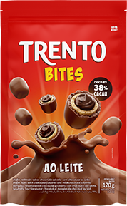
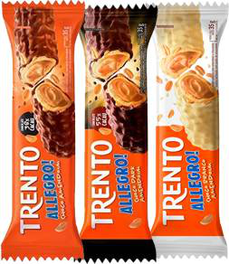
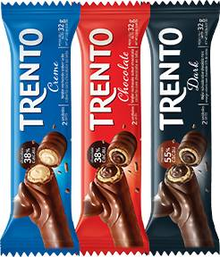
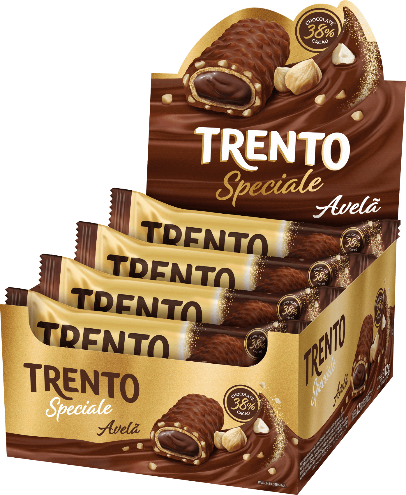
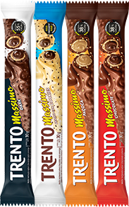
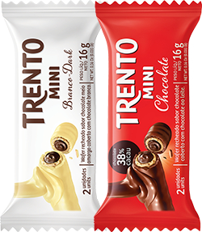

A Magia do Chocolate Trento
Uma explosão de sabores
Bem-vindo ao mundo irresistível do Chocolate Trento! Nossa missão é proporcionar uma experiência única e deliciosa para todos os amantes de chocolate. Com uma combinação perfeita de ingredientes selecionados e uma textura inigualável, Trento se destaca por sua variedade de sabores que encantam o paladar. Desde 2011 levando a outro nível o desejo de comer chocolate. Explore, saboreie e apaixone-se por Trento, o chocolate que transforma cada mordida em um momento especial!
TRENTO BITS
Descubra Trento Bits, a linha de chocolates da Ferrero que oferece pequenas explosões de sabor a cada mordida. Perfeitos para quem busca uma indulgência prática e deliciosa, os Trento Bits combinam o chocolate ao leite de alta qualidade com recheios cremosos e crocantes. Esses pedacinhos são ideais para compartilhar com amigos, desfrutar como um lanche rápido ou adicionar um toque especial a sobremesas. Com Trento Bits, cada momento se transforma em uma experiência saborosa e inesquecível.
TRENTO ALLEGRO
Descubra Trento Allegro, a linha de chocolates da Ferrero que combina a alegria dos sabores com a sofisticação do chocolate premium. Cada Trento Allegro é uma sinfonia de texturas e recheios cuidadosamente selecionados, envoltos em uma camada de delicioso chocolate ao leite. Perfeitos para quem busca um toque de elegância em seus momentos de indulgência, os chocolates Trento Allegro são ideais para compartilhar, presentear ou simplesmente desfrutar a qualquer hora. Experimente a harmonia perfeita entre cremosidade, crocância e sabor com Trento Allegro.
TRENTO
Conheça o Trento Original, o clássico chocolate da Ferrero que conquista paladares com sua combinação perfeita de crocância e cremosidade. Este delicioso chocolate é composto por uma generosa barra de chocolate ao leite, recheada com um creme irresistível e pedaços crocantes que proporcionam uma experiência única a cada mordida. Ideal para uma pausa indulgente ou para compartilhar momentos especiais, o Trento Original é a escolha perfeita para os amantes de chocolate que apreciam a qualidade e o sabor inigualável da Ferrero.
TRENTO SPECIALE
Descubra a perfeição em forma de chocolate com Trento Speciale da Ferrero. Cada peça é uma obra-prima de indulgência, combinando camadas de chocolate ao leite premium com recheios exclusivos e texturas irresistíveis. Ideal para momentos de deleite pessoal ou presentear alguém especial, Trento Speciale oferece uma experiência sensorial única que combina tradição artesanal italiana com ingredientes da mais alta qualidade.
TRENTO MASSIMO
Descubra Trento Massimo, uma linha de chocolates da Ferrero que combina camadas abundantes de chocolate ao leite com recheios cremosos e pedaços crocantes. Cada mordida oferece uma indulgência única e sofisticada, ideal para quem aprecia o melhor em qualidade e sabor. Trento Massimo é perfeito para momentos especiais e celebrações, elevando o prazer do chocolate a um nível superior de indulgência gourmet.
TRENTO MINI
Conheça Trento Mini, a versão compacta do clássico chocolate da Ferrero. Cada Trento Mini é uma pequena maravilha de sabor, combinando o delicioso chocolate ao leite com recheios cremosos e texturas crocantes em um formato conveniente e portátil. Ideal para compartilhar com amigos, desfrutar como um lanche rápido ou levar com você para qualquer lugar, Trento Mini oferece a mesma qualidade e prazer do Trento original em um tamanho perfeito para qualquer ocasião. Saboreie a excelência do chocolate Ferrero a qualquer momento com Trento Mini.